때로는 건강한 좌절도? 🤔 승리보다 값진 경험, 키키리키 보드게임으로 완성!
안녕하세요, 생각공작소입니다. :)
오늘은 아이들과 함께 인기 만점 보드게임
'키키리키'로 즐거운 시간을 보냈습니다! 🎲🐔
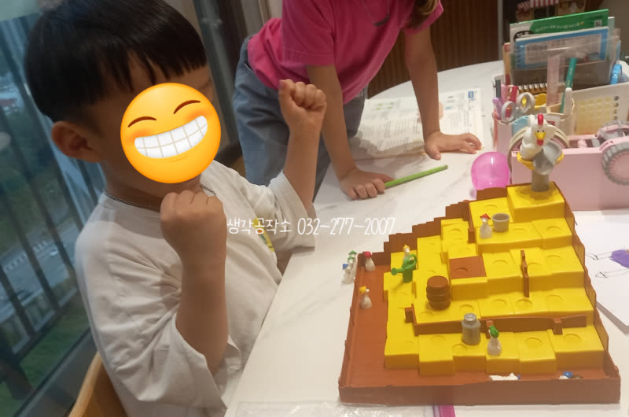
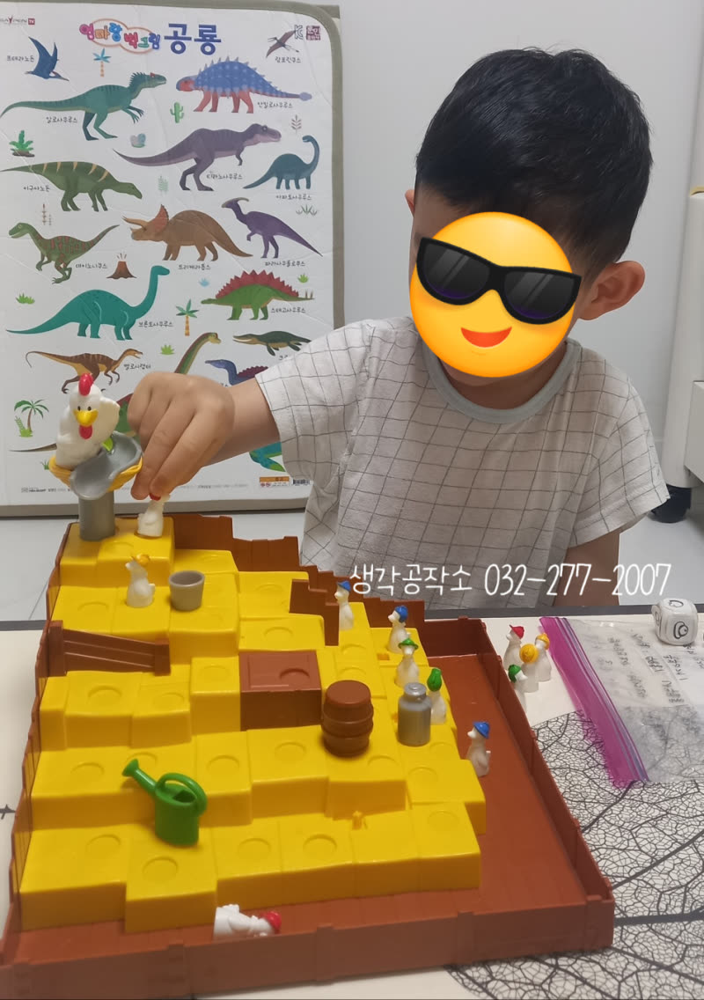
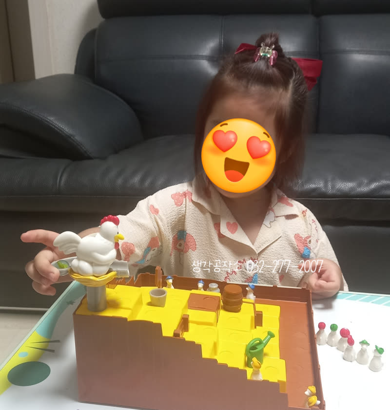
저희는 보드게임 수업도 단순히 결과물이나 승패를 넘어,
수업 과정에서 선생님과 주고받는
정서적 교류, 지지, 긍정적인 피드백을 통해 얻는
자신감과 사회성 향상을 가장 중요하게 생각합니다.
같은 프로그램이라도 어느 기관에서 누구에게 수업을 받느냐에 따라
아이들에게 미치는 영향은 크게 달라질 수 있기에,
피드백 과정에 더욱 깊이 집중하고 있습니다.
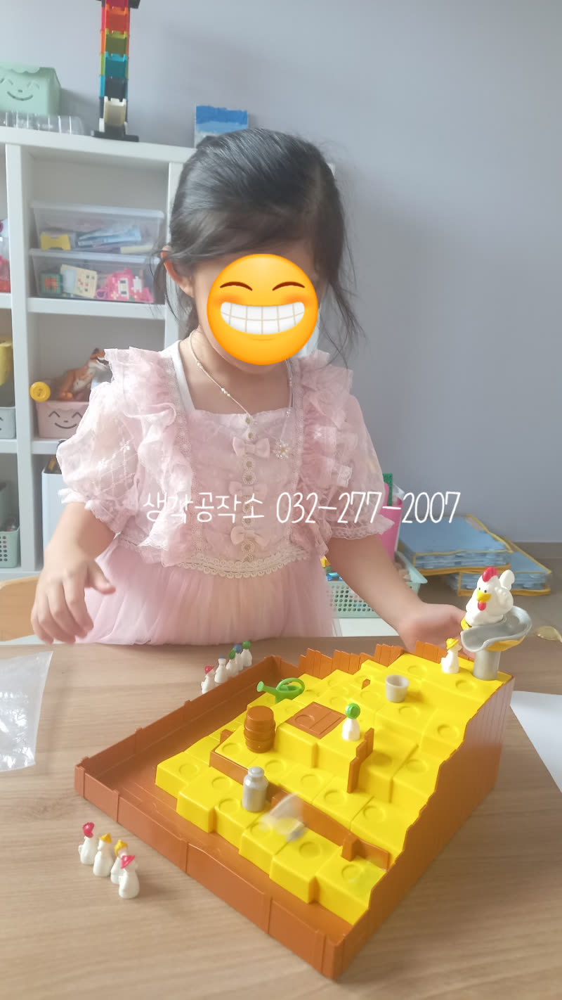
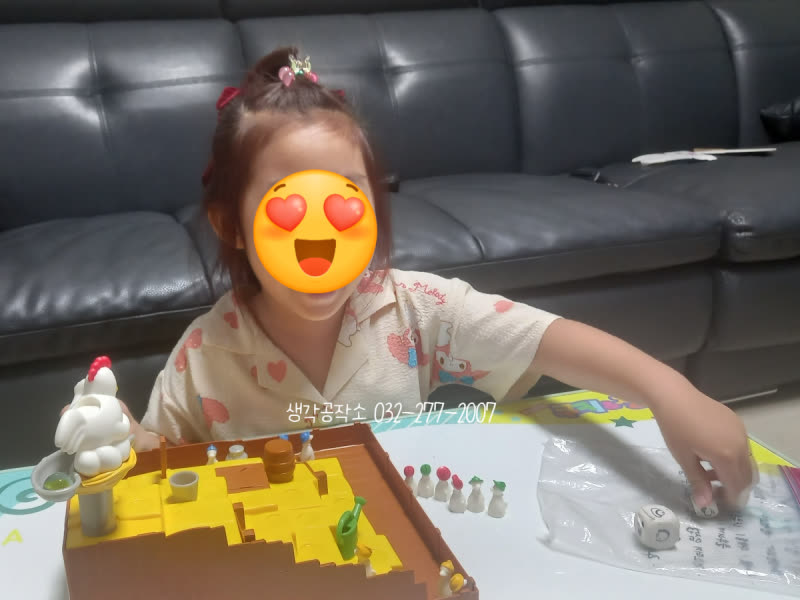
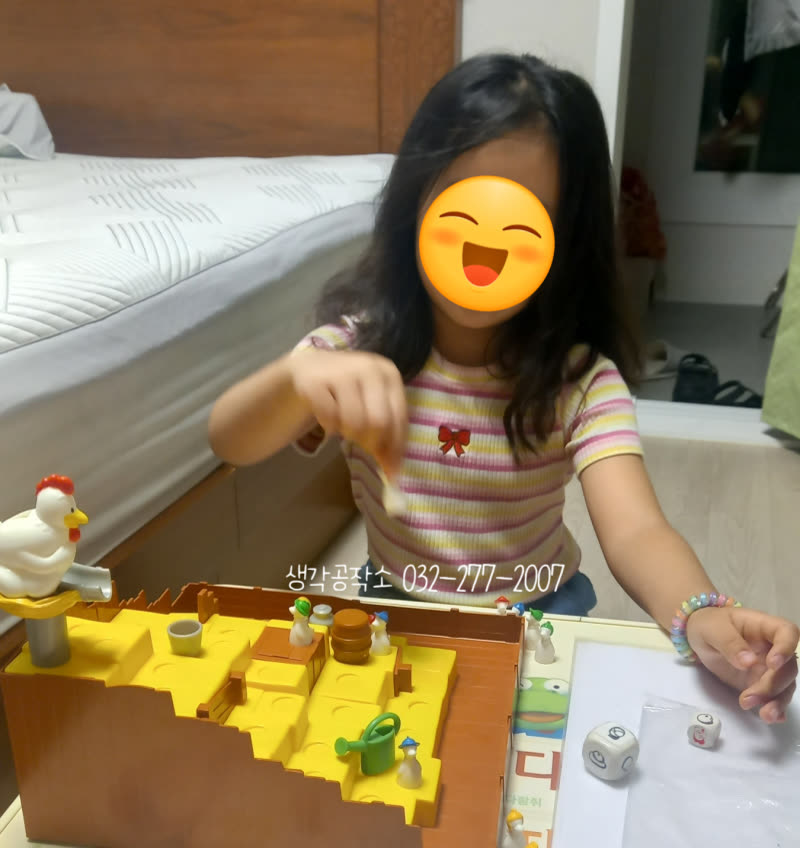
'키키리키' 게임을 하다 보면
아이들마다 가진 고유의 성격과 기질이 고스란히 드러납니다.
①
수줍음이 많고 온순한 기질의 아이는
주사위 하나 던지는 것도 조심스럽게, 살살 내려놓는 경향이 있습니다.
이런 아이들에게 저희 선생님들은
"아싸 성공!", "박수!", "야호!" 등 신나는 추임새를 넣어주며
스스로 따라 말할 수 있도록 이끌어줍니다.
작은 성공에도 기쁨을 표현하는 법을 배우고,
자신감을 불어넣어 주는 귀한 시간이 된답니다.
두 손을 모으고 성공을 기도하는 아이의 모습은
그어떤 작품보다 값진 순간입니다. 🙏
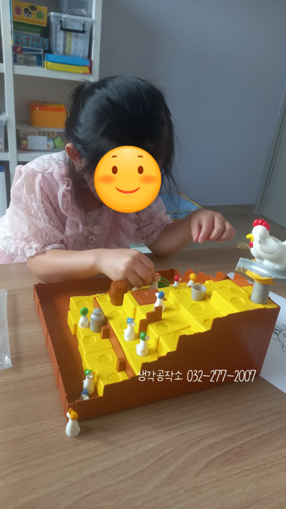
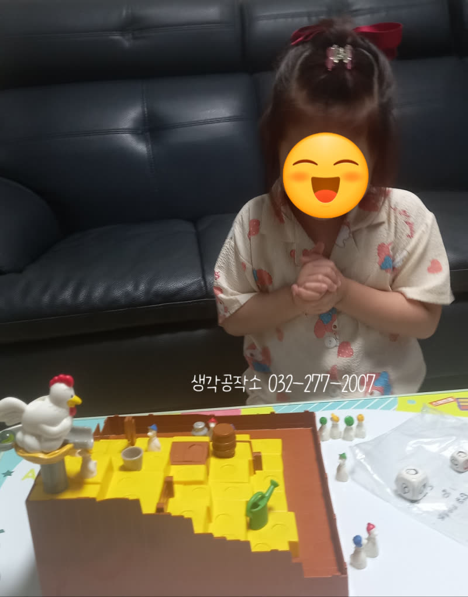
②
에너지가 넘치고 충동적인 기질의 아이는
주사위를 던지면 구역 밖으로 날아가고,
엉덩이가 들썩들썩하여 자기 차례를 기다리는 것을 힘들어하기도 합니다.
이러한 아이들에게는 게임의 순서와 규칙,
한계 등을 부드럽게 알려줍니다.
"이렇게 해야 우리 모두가 즐겁게 게임할 수 있어"라고 설명하며,
차분하고 안정된 마음으로 자기 조절하는 법을 경험하게 합니다.
충동적이고 과격한 흥분을 기분 좋은 설렘으로 전환시키고,
승리뿐 아니라 때로는 건강한 좌절도 경험하며
한 걸음 더 성장하는 기회를 만들어 줍니다.
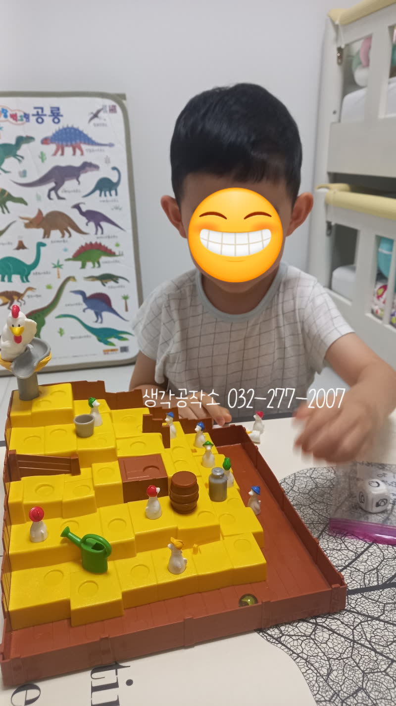
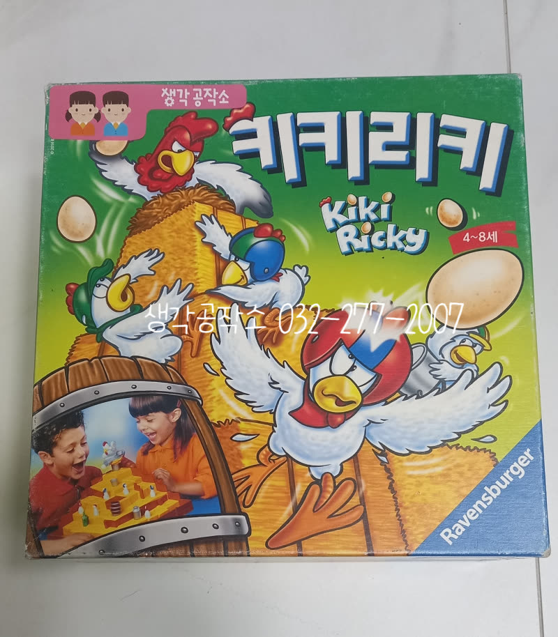
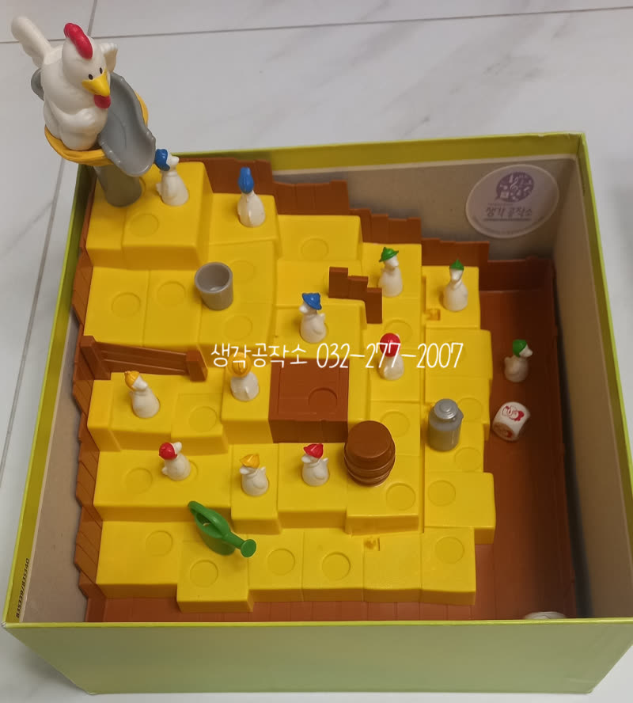
저희 생각공작소는 보드게임을 통해
단순히 즐거움만 추구하는 것이 아닙니다.
아이들의 극단적인 기질을 이해하고,
이를 안정된 성격으로 이끌 수 있도록 수업을 진행합니다.
보드게임은 뇌를 활성화하고 두뇌 발달을 촉진하며,
집중력 향상과 사회성 향상에도 큰 효과를 줍니다.
무엇보다, 아이들이 즐겁게 놀이하며
자연스럽게 배우고 성장하는 소중한 경험을 선물합니다.
오감쑥쑥 서비스가 우리 아이들의 즐거운 성장에 든든한 밑거름이 되도록,
저희 생각공작소가 아이들의 오감을 깨우는
행복한 경험들을 계속 만들어가겠습니다! 🙌
📞 생각공작소 032-277-2007